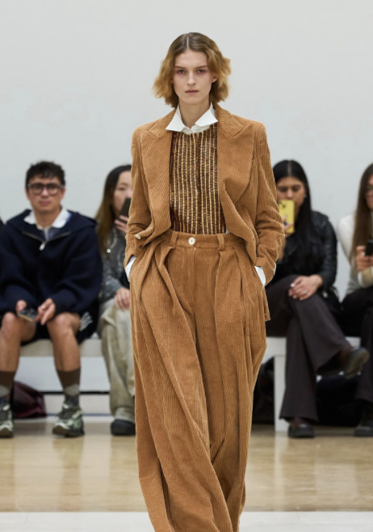
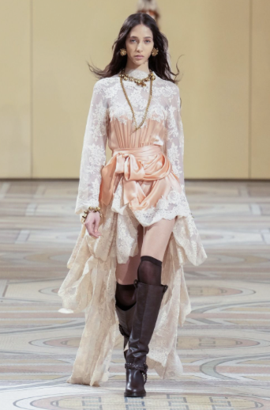
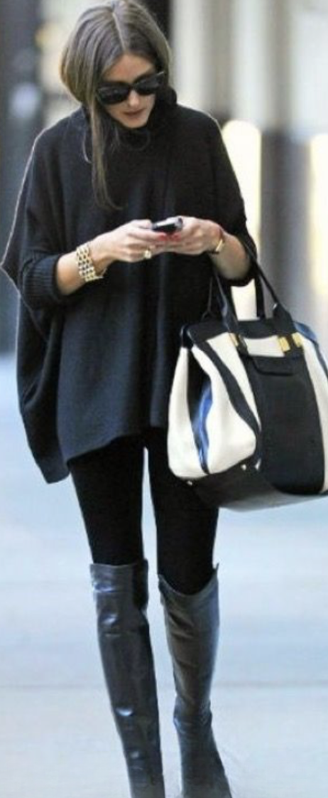
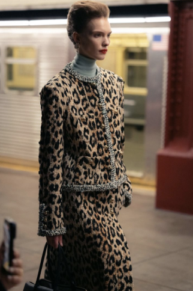
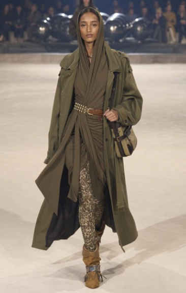

Impossible d’imaginer un hiver sans denim. Les jeans s’imposent une fois de plus dans les collections automne-hiver 2025/2026. Sur les podiums, ils défilent partout : de Versace à Chanel, de Coperni à Maje. Coupes flare, wide-leg, modèles à motifs ou encore ornés de dentelle, de clous ou de strass pour les fêtes… il y en a pour tous les styles et toutes les envies.
 En deuxième position de notre sélection, le jean en velours confirme sa volonté de s’imposer dans vos garde-robes pour la deuxième année consécutive. Héritage des années 1970 puis remis au goût du jour dans les années 1990, il opère aujourd’hui un véritable retour en force. En plus de tenir parfaitement chaud en hiver, il se décline dans une multitude de coupes : ultra oversize, plus structurée ou même revisité sous forme de tailleur.
 Si le style bohème a marqué l’été avec ses blouses volumineuses en dentelle, ses robes légères et ses accessoires en daim ou à franges, il n’a pourtant pas dit son dernier mot. Cette esthétique occupera une place de choix dans vos garde-robes cet hiver. L’inspiration vient directement des collections 2025/2026 : Isabel Marant revisite le bohème avec une touche rock, tandis que Zimmerman propose des silhouettes composées de pulls sans manches oversize dans des teintes sobres écru, beige, rose poudré associés à de longues jupes volumineuses à volants, relevées par des couleurs plus intenses comme le bordeaux, le kaki ou le chocolat. Le denim trouve naturellement sa place dans ce registre, que vous pouvez d’ailleurs associer à vos blouses estivales aux volumes généreux ou aux détails froufroutants. Pour parfaire votre look bohème, misez sur des bottes en daim et un sac à franges. Et pour les plus audacieuses, une pointe de rock-clous ou finitions métalliques apportera la touche finale. La grande tendance du moment auquelle on ne s’attendait peut-être pas à voir venir dans nos gardes-robes, n’est autre que le legging. Mais attention : tout repose sur la manière de l’associer et de le porter. Si cette pièce évoque encore pour vous le vêtement de sport ou d’intérieur, chassez cette idée de votre tête. Le legging peut parfaitement s’intégrer dans un look chic lorsqu’il est associé à une veste blazer oversize ou à des bottes hautes pour une allure plus élégante. Si vous préférez un style décontracté, optez pour une veste en cuir qui créera un contraste idéal. Vous pouvez également miser sur une paire de petites bottines et une chemise à carreaux pour un look qui rappelle avec charme les années 2010.
 Celui qui avait déjà fait son grand retour la saison dernière, aux côtés des pantalons en velours mais dans une approche un peu moins niche, n’est autre que le motif animalier — et plus précisément le léopard. Après avoir envahi vos penderies, cet imprimé s’était quelque peu fait discret ces derniers mois, mais il revient en force cet hiver. Sa résurgence a été particulièrement remarquée lors du dernier défilé Chanel, où Mathieu Brazy l’a remis à l’honneur de manière inattendue. Si un imprimé léopard peut sembler inhabituel chez Chanel, la façon dont il a été intégré est un vrai cadeau pour les yeux : des silhouettes iconiques, entre jupes façon tutu et ensembles très structurés typiques de la maison, mêlant subtilement décontraction et haute couture pour une harmonie parfaite.
Dans la lignée de cette audace, une tendance ravira les amateurs et passionnés de chiens : le teckel s’invite sur toutes les pièces de votre garde-robe. Pulls, sacs à main, pyjamas, pantalons, et même porte-clés : ce petit chien au corps long et aux pattes courtes inspire les designers. Cette fascination se reflète également dans la vie réelle, avec une augmentation de 10 % des adoptions de cette race ces deux dernières années. 
Pour cette dernière tendance, il ne s’agit pas d’une grande nouveauté, mais d’un style incontournable qui s’adapte à toutes sortes de looks, qu’ils soient casual ou plus chic : le maximalisme. Cette tendance se traduit par des pièces volumineuses et oversize, aux formes structurées et masculines, moins féminines, mais capables d’apporter une élégance certaine à n’importe quelle tenue.